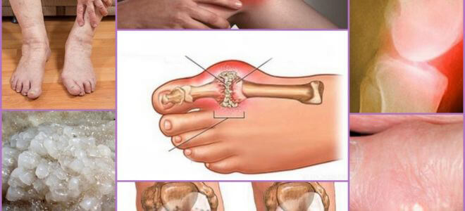

„Deutscher Ansatz, um Gelenkschmerzen zu heilen,
überrascht die Welt“. Ein berühmter deutscher
Rheumatologe gab deutschen Medien ein ehrliches
Interview.
Karl Kirschmayer Leiter des Berliner
Rheumatologie- und Tumorzentrums Eva-Mayr-Stahl der
weltberühmten Charité:
Gelenkschmerzen werden durch etwas verursacht, was
viele deutsche Ärzte zu ignorieren scheinen.
Dr. Karl Kirschmayer: „In Deutschland weren
Gelenkschmerzen immer noch mit veralteten und
ineffektiven Mittel behandelt, die ein Leben lang
eingenommen werden müssen. Im Rest Eruopas werden
Gelenkschmerzen mittlerweile wie eine einfache
Erkältung behandelt.“
Im letzten Jahr besuchte Karl Kirschmayer Amerika und machte sich mit seinen dortigen Kollegen
vertraut. Was er dort zu sehen bekam, ist laut ihm nur schwer zu erklären. Dr. Karl
Kirschmayer musste gestehen, dass die Rheumatologie in Deutschland im internationalen
Vergleich noch im vergangenen Jahrhundert stecke.
Nach einer Konferenz in den USA gab Dr. Karl Kirschmayer deutschen Medien ein Interview. Was
gefällt dem bekannten Arzt nicht am deutschen Ansatz und warum meint er, dass Deutsche mit
Gelenkproblemen womöglich nie wieder gesund werden?
– Als Sie den deutschen Journalisten Ihre
Antworten präsentierten, waren diese geschockt.
Könnten Sie ein wenig näher darauf eingehen?
– Natürlich habe ich nichts gegen unser Land und schon gar nichts gegen meine verehrten
Kollegen. Und dennoch ist unser Gesundheitswesen veraltet und liegt im internationalen
Vergleich sicherlich 20 bis 30 Jahre zurück – zumindest im Bereich der Gelenkprobleme
und Probleme des Bewegungsappartes. Wir könnten soweit gehen und sagen, dass die Rheumatologie
in Deutschland noch in den Kinderschuhen steckt.
Schauen wir uns einmal an, was in Deutschland bei Gelenkschmerzen getan wird: Viprosal,
Dolgit, Voltaren, Fastum, Diclofenac, Teraflex, Nufrofen und andere Medikamente dieser Art.
Diese Medikamente heilen jedoch keine GELENK UND KNORPELSCHÄDEN, sondern lindern nur die
Symptome (Schmerzen, Entzündungen, Schwellungen). Raten Sie mal, was im Körper passiert? Wenn
wir eine Pille schlucken, Cremes auftragen oder eine Spitze erhalten,
verschwinden die Schmerzen. Sobald dieser Effekt nachlässt, sind die Schmerzen sofort wieder
da.
Der Schmerz ist ein wichtiges Signal, der auf Krankheiten in den Gelenken hinweist. Wenn wir
die Schmerzen einfach nur eliminieren, bleiben die Gelenke unverändert und sorgen zukünftig
für noch mehr Schmerzen. Sie verkommen mit der Zeit immer schneller,
was zu unwiederbringlichen Schäden bis hin zur Bewegungsunfähigkeit und damit zur Behinderung
führt.
In den USA wird dieser Ansatz bei Gelenkschmerzen schon seit 20 Jahren nicht mehr genutzt.
Schmerzmittel werden nur noch in extremen Fällen punktgenau eingesetzt. In Deutschland werden
sie hingegen am Fließband verabreicht.
Die sogenannten „Chondroprotektoren“ sind sogar völlig verboten, weil sie einfach nur eine
Abzocke sind und nichts bewirken.
Viele Ärzte und Apotheker sehen zu, wie immer mehr Menschen betroffen sind. Und es macht Sinn!
Denn teure Schmerzmittel zu verschreiben, die nur die Symptome lindern, sind viel profitabler
als die Heilung der Krankheit an sich. Wie können Ärzte und Apotheker
das nur verantworten?
– Wie werden Gelenkbeschwerden in den USA
behandelt?
– Die amerikanischen Ärzte, Rheumatologen und Apotheker wissen seit langem, dass zum Behandeln
einer Krankheit deren Ursache bekämpft werden muss und nicht die Symptome. Dadurch ist eine
schnelle Erholung quasi garantiert. Und was ist die Hauptursache
für Gelenkschmerzen? Die Ansammlung von Ortho-Salzen aufgrund von Blutkreislauf-Störungen und
Problemen des synovialen Kreislaufs.
Urate oder das wahre Salz der Harnsäure, die Ursache für Gicht.
Osteophyten oder kalzinierte Salze sind für die restlichen 97% der Erkrankungen der Gelenke
und der Wirbelsäule verantwortlich. Das sind alle Arten von Arthritis und Arthrose,
Bandscheibenvorfälle, Osteoporose, Rheuma, Schleimbeutelentzündung und sogar
Hygrome. Alle diese Krankheiten haben eine Grundursache – Ablagerungen von Osteophyten.
Die Salze sammeln sich auf der Gelenkoberfläche an und schleifen wie Sandpapier das umgebende
Gewebe (also Knochen und Knorpel) ab. Wachsende Salzkristalle verletzen das Muskelgewebe,
Sehnen, Blutgefäße und Kapillaren. Dadurch entstehen Entzündungen,
Infektionen, Schwellungen und starke Schmerzen.
In unbehandelten Fällen können große Mengen von Orthosalzen nach einer plötzlichen Bewegung
leicht einen Teil eines Knochens abbrechen, wodurch eine vollständige Behinderung und eine
dauerhafte Immobilisierung des Gelenks verursacht werden.
Es ist ein sehr gefährlicher Irrglaube, dass Kalzium gut für die Gelenke sei. Ja, Kalzium ist
gut, aber nur wenn Sie GESUNDE Gelenke haben. Wenn die Gelenke wund sind oder Risse
aufweisen, bedeutet dies,
dass sich bereits eine Schicht Osteophyten um sie herum gebildet hat. Kalzium stärkt nicht nur
das Knochengewebe, sondern auch die Osteophytensalze und verstärkt und beschleunigt so deren
Wachstum.
Amerikanische Rheumatologen stellten deswegen zunächst die Durchblutung des betroffenen
Gelenks wieder her, um das im Laufe der Jahre angesammelte Orthosalz zu zersetzen. Dies stellt
wiederum die normale Zirkulation der Synovialflüssigkeit wieder her
und löst den Wiederherstellungsprozess eines Gelenkgewebes aus.

Kalzinose Beschädigtes und entzündetes Gelenk Salzkristalle
Orthosalz-Bildung auf den Gelenkoberflächen – die
Hauptursache aller pathologischen Veränderungen
Merkwürdigerweise können Gelenke sehr gut geheilt werden. Sie können sich von selbst erholen,
wie eine Eidechse ihren Schwanz nachwächst. Sie brauchen nur ein wenig Hilfe, um
Salzansammlungen zu beseitigen und der Prozess wird von selbst gestartet.
In den 90er Jahren des letzten Jahrhunderts haben Wissenschaftler eine aktive Verbindung in
Eukalyptusöl entdeckt – Eukalyptol. Es erweitert Blutgefäße und verbessert somit die
Blutversorgung der Gelenke, was zu Linderung von Entzündungen führt und Schmerzen
mindert.
Jene Substanz kann in die Moleküle der Orthosalze eindringen und diese von innen eliminieren,
was zu einer reinen Oberfläche der Gelenke sowie zu einer Regeneration des Blut und
Synovialflüssigkeitskreislaufs führt. Der Effekt ist Diese Substanz kann
in die Moleküle der Orthosalze eindringen und diese von innen entfernen, was zu einer
saubereren Oberfläche der Gelenke, einer Wiederherstellung des Blut und
Synovialflüssigkeitskreislaufs führt. Der Effekt
ist permanent! Oder besser gesagt, bis sich die Salze wieder ansammeln (dies wird jedoch
mehrere Jahrzehnte dauern). Es ist nicht mehr erforderlich, dauerhaft Medikamente einzunehmen,
um Schmerzen und Entzündungen
loszuwerden. Sie müssen nicht befürchten, dass Ihr Gelenk eines Tages für immer „stecken
bleibt“ und dass Ihnen die Mobilität völlig entzogen wird und Sie eine Prothese benötigen. Die
Menschen werden seit Jahrzehnten
vollkommen gesund!
Eines Tages als ich die deutsche medizinische Statistik sah, standen mir die Haare zu Berge.
Wissen Sie, was ist die häufigste Ursache für Behinderungen in Deutschland ist? Es ist weder
Krebs noch AIDS oder Diabetes, es ist Arthrose! Während in den USA
Arthrose in 4-6 Wochen mit nicht sehr teuren Medikamenten behandelt wird, führt sie in
Deutschland zu einer Behinderung!
Gelenkkrankheiten gelten heute in den USA nicht mehr als gefährlich. Ich spreche nicht von
schweren traumatischen Verletzungen: Brüche, Quetschungen oder Verstauchungen von Knochen usw.
Schmerzhafte und entzündete Gelenke sind nur das Anzeichen für ihre
„Kontamination“ mit Salzen, die gereinigt werden müssen. Nach einer 4-6-wöchigen Reinigung
kehren die Gelenke in ihren normalen Zustand zurück und die Probleme treten für mindestens 10
Jahre nicht mehr auf.
Jene Gelenkkrankheiten, die in Deutschland auf altertümliche Weise behandelt werden, werden in
den USA schlicht zusammenfassend als Kalzinose bezeichnet. Dies gilt für:
Gicht
Arthritis
Arthrose
Bandscheibenvorfälle
Rheuma
Osteoporose
Schleimbeutelentzündungen
Synovitis
Hygrome.
In dieser Liste sind nur einige Krankheiten erwähnt, aber auch andere Krankheiten sind nur
eine Unterklasse der oben aufgeführten neun Hauptkrankheiten. Zum Beispiel ist Coxarthrose
eine Art von Arthrose usw.
Die ganze Krankheitsliste kann sehr einfach mit einer einfache Gelenkreinigung behandelt
werden. Dies ist absolut sicher, erfordert keine medizinische Nachsorge und kann zu Hause
durchgeführt werden.
– Wie werden die Gelenke in den USA gereinigt?
– Es gibt spezielle Produkte mit Eukalyptus, denen nachgesagt wird, Gelenke vor
Salzansammlungen zu befreien. Aber keines dieser Produkte ist wirklich wirksam. Laut Experten
ist eines der besten Produkte. Es beinhaltet Eukalyptol in
einer
speziellen, leicht annehmbaren Form, was zu einer schnelleren und effektiver therapeutischen
Wirkung führt.
Ein weiterer wichtiger Vorteil von ist, dass es einen Komplex
von Arthro-Vitaminen
und Spurenelementen enthält, die die Leistung des Gelenkgewebes verbessert. Es hat eine
geeignete heilende Wirkung auf das Knochen- und Knorpelgewebe, die
Synovialflüssigkeit, Muskelfasern, Bänder und Sehnen. Kurz: Das Mittel hat ein umfassendes und
breites Wirkungsspektrum.
enthält über 50 Komponenten. Ich werde nicht alle auflisten,
sondern erwähne nur die
wichtigsten:
Menthol
ist eine organische Substanz, die aus Minzessenz isoliert oder
synthetisch hergestellt wird.
Die Verbindung ist ein sekundärer Metabolit von Pflanzen, die zur Familie der
Lippenblütler gehören. Es ist ein farbloser Kristall
mit einem minzigen Aroma und einem kühlenden Geschmack. Menthol wirkt schwach
antiseptisch, kühlt die Haut und hat auch eine lokalanästhetische Wirkung.
Ätherisches Eukalyptusöl
wird durch Wasserdampfdestillation gewonnen wird, sowie Gerbstoffe,
Gallotannin, Cumarin- und Zimtsäure
haben dank des darin enthaltenen Cineols antiseptische und entzündungshemmende
Eigenschaften.
Das Öl hemmt zudem das Wachstum von Bakterien und wirkt kühlend auf Haut und
Schleimhäute.
Kampferöl
wird zum Einreiben bei Gelenkschmerzen verschiedener Ätiologien
(Ursachen) verwendet,
einschließlich rheumatoider Arthritis, Myositis (Muskelentzündung),
Tendinitis (Sehnenentzündung) und Neuralgie (Nervenschmerzen).
– Ich gehe davon aus, dass nicht in
deutschen Apotheken verkauft wird?
– Leider nein. Deutsche Ärzte „füttern“ die Menschen
lieber mit Schmerzmitteln und Chondroprotektoren,
als sie zu behandeln.
Dennoch kennen deutsche Rheumatologen (zumindest
diejenigen von ihnen, die an fortschrittlichen
Therapien interessiert sind) und seine
regenerativen Eigenschaften. Sie trauen sich jedoch
nicht, die Medikamente zu verschreiben, die nicht
auf der Liste der empfohlenen Medikamente in
Deutschland stehen.
Meines Wissens nach wollte der Hersteller von Motion
Energy auf den deutschen Markt expandieren, was
jedoch aufgrund zahlreicher bürokratischer Hürden
nicht gelang. Dies ist verständlich, denn wenn
dieses Medikament in die Apothekenregale gelangt,
wird die deutsche Pharmaindustrie enorme Verluste
erleiden. Schließlich ist die Arzneimittelindustrie
in erster Linie ein Geschäft! Auch in den USA. Dort
wird diese Branche jedoch von der Regierung
kontrolliert.
– Was würden Sie Betroffenen in Deutschland
empfehlen?
– Betroffene (insbesondere über 50 Jahre alt),
leiden als erste unter der veralteten deutschen
Medizin. So funktioniert das Gesundheitswesen
leider.
Universität für Orthopädie und Rheumatologie
Zum Glück gibt es eine Lösung. Unsere Zeitung hat
mit der Universität für Orthopädie und Rheumatologie
die Möglichkeit vereinbart, das Medikament zu einem
ermäßigten Preis an alle Bürger Deutschland zu
verteilen, bei denen gewisse Probleme auftreten. Die
Mitarbeiter der Universität richteten ein spezielles
Vertriebszentrum ein, und wir stellten die
Medikamente zur Verfügung. Daher kann ab sofort
jeder Deutsche zu einem symbolischen
Preis von mit kostenloser Lieferung im ganzen Land
bestellen.
Jetzt verrate ich Ihnen, wie Sie
bestellen können.
Folgen Sie diesen Schritten:
Füllen Sie das offizielle Bestellformular aus, das
am Ende des Artikels angehängt ist, um Motion
Energy zu bestellen.
Bestätigen Sie beim Anruf eines Mitarbeiters Ihre
Bestellung, der gerne Ihre Fragen beantwortet.
Erhalten Sie Ihre Packung 5 bis 7 Werktage später
per Post.
wird 2 Monate lang vergeben. Tausende
Deutsche haben bereits von dieser Gelegenheit
profitiert. Jeder, der erhalten hat,
wird gebeten, die Effizienz des Produkts auf einer
Skala von 1 bis 10 zu bewerten. Bis heute haben mehr
als 3.000 Personen an der Umfrage teilgenommen, und
die durchschnittliche Bewertung der Marke beträgt
9,97 von 10.
Wie Sie sehen, hat dazu beigetragen,
die Mobilität der Betroffenen zurückzuerlangen und
die Schmerzen Tausender loszuwerden. Sie können
dazugehören!
Laut Stand vom
beträgt die Verfügbarkeit zum Sonderpreis:
23 Stk.
Kommentare
Jana Heller /
Leipzig
Vielen Dank, das ist sehr hilfreich. Ich habe in
einer Privatklinik über 500 bezahlt! Und
das nur für ein paar Spritzen! Ich habe zum Sonderpreis
gekauft und der Manager
meinte, das es extrem viele Bestellungen gebe. Ich
bin froh, die Chance genutzt zu haben.
Viktor Grün / München
Ich bin einer der wenigen Glücklichen, die es geschafft haben, zu probieren. Es ist
wirklich das Beste. Ich habe seit 7 Jahren Arthrose und es ist eine echte Folter. Ich war
bereit, für den Rest meines Lebens Tabletten und Injektionen zu
nehmen, aber am Ende, nach einer Therapie mit , sind die
Schmerzen verschwunden.
Völlig weg! Ich kann es jedem empfehlen – es hilft wirklich!
Michael Düber /
Ludwigshafen
Ich bin 63 Jahre alt und mir tun meine Knie weh,
seit ich 53 Jahre alt bin. Vor kurzem wurde der
Schmerz unerträglich. Einer meiner Freunde ist
ein guter Spezialist (wir sind seit Kindertagen Freunde) und er
erzählte mir von diesem Programm und riet mir,
dieses Mittel zu bestellen.
Jetzt ist alles wieder wie früher, auch wenn ich
vorsichtiger sein sollte. Wie auch immer, dieses
Produkt ist das Beste!
Helene Landrut / Köln
Ich habe mir im Rahmen des Sonderangebots bestellt. Mit
wurde versprochen, dass es
innerhalb von 5 Tagen geliefert werden würde. Ich freue mich schon!
Kathrin Weiß / Hamburg
Ich denke schon, dass unsere Ärzte sehr gut darin sind, uns abzuzocken. Das Geld ist das
einzige, was sie interessiert. Alle sechs Monate bekam ich eine Spritze. Im vergangenen
Herbst hat sie mir so viele Dinge verschrieben, dass ich Angst hatte, mit
der Behandlung zu beginnen. Meine Ärztin hat sich nicht einmal mit anderen Krankheiten und
möglichen Nebenwirkungen befasst. Es war ihr egal und sie gab mir nur das Rezept, bei dem
sie möglichst viele Provisionen bekam. Vielleicht
sind andere Anbieter anders, keine Ahnung. Unser Gesundheitssystem ist Mist. Ich bin froh,
dass es eine erschwingliche europäische Marke gibt!
Andreas Köhler / Schwerin
Ja, es ist zum Heulen. Ich bin 59 Jahre alt. Zwei Drittel meiner Kollegen starben schon und
der Rest bewegte sich kaum wegen des ewigen Schmerzes in den Beinen, Armen, Rücken ... Es
lohnt sich, darüber nachzudenken.
Karsten Düster / Chemnitz
Dieses Mittel ist wirklich großartig. Ich wurde letzten Sommer behandelt (mein Sohn kam aus
den USA zurück). Die Gicht ist weg! Bisher keine neuen Schmerzen. Ich bin selbst überrascht.
Ich fühle mich, als wäre ich wieder 20 Jahre alt. Ich kann es allen
empfehlen. Schlagt zu, solange es nur
kostet. Ihr habt nichts zu verlieren!
Anne /
Lüneburg
Ich habe auch positive Erfahrungen mit gemacht. Früher waren
es Spritzen, doch
jetzt mit fühle ich mich wie neu geboren!
Susanne Albrecht / Berlin
Ich mag diese Marke auch. Ich nahm früher Etodolac, Meloxicam, später Cetorol. Aber dann
hörten sie plötzlich auf zu wirken. Ich ging zum Arzt und sie riet mir, zu
probieren (der Spezialist war jung, glaubt wahrscheinlich immer noch, dass Medizin
für Menschen sein sollte, nicht um uns Geld aus den Taschen zu holen!). hat mir von
der ersten Anwendung an gut geholfen. Die Schmerzen sind fast sofort verschwunden, aber ich
habe eine Therapiekur absolviert, wie
von meinem Spezialisten empfohlen. Drei Wochen später vergaß ich, wie es früher war. Ich
fühle mich großartig, so wie ich wieder jung wäre!
Herbert Wagner / Potsdam
Mein Nachbar ist 72 Jahre alt und hatte sich oft über seinen Rücken beschwert. Aber letzten
Monat habe ich ihn aktiv und fröhlich gesehen. Er sagte, dass er benutzt habe, dass
sein Enkel irgendwo gekauft habe.
Tanja Trichter / Neubrandenburg
Ich habe in den deutschen Foren Bewertungen von gelesen. Mir
ist klar, dass das den
normalen Pharmaunternehmen nicht gefällt! Zum Glück war ich pünktlich und habe bei 4990
bestellt. Mir wurde am Telefon gesagt, dass nur noch sehr wenige
Packungen verfügbar seien.
Paul Richter / Greifswald
Ich habe in einem Foren für Gelenkprobleme entdeckt. Viele
Menschen sind von ihren
Ergebnissen überzeugt und ich habe beschlossen, es mir auch zu bestellen. Ich benutze es nur
für 3 Tage und ich kann eine offensichtliche Verbesserung sehen.
Der Schmerz ist vollständig verschwunden und die Gelenke knirschen nicht mehr so stark. Sie
sind immer noch etwas geschwollen, aber viel weniger als zuvor. Ich werde mich nach
Abschluss der Behandlung wieder melden, bin aber bisher
sehr glücklich.
Maria Kirschner / Dotrmund
Vielen Dank! Ich habe es für mich und meinen Mann bestellt. Ich habe den Berater gefragt,
wann es in Apotheken verkauft werden wird und er sagte, er wüsste es nicht. Dies ist die
einzige Chance, diese Marke auszuprobieren.

 Jana Heller /
Leipzig
Jana Heller /
Leipzig
 Viktor Grün / München
Viktor Grün / München
 Michael Düber /
Ludwigshafen
Michael Düber /
Ludwigshafen
 Helene Landrut / Köln
Helene Landrut / Köln
 Kathrin Weiß / Hamburg
Kathrin Weiß / Hamburg
 Karsten Düster / Chemnitz
Karsten Düster / Chemnitz
 Anne /
Lüneburg
Anne /
Lüneburg
 Susanne Albrecht / Berlin
Susanne Albrecht / Berlin
 Herbert Wagner / Potsdam
Herbert Wagner / Potsdam
 Tanja Trichter / Neubrandenburg
Tanja Trichter / Neubrandenburg
 Paul Richter / Greifswald
Paul Richter / Greifswald
 Maria Kirschner / Dotrmund
Maria Kirschner / Dotrmund
 Heike Stollberg / Düsseldorf
Heike Stollberg / Düsseldorf

Kommentare